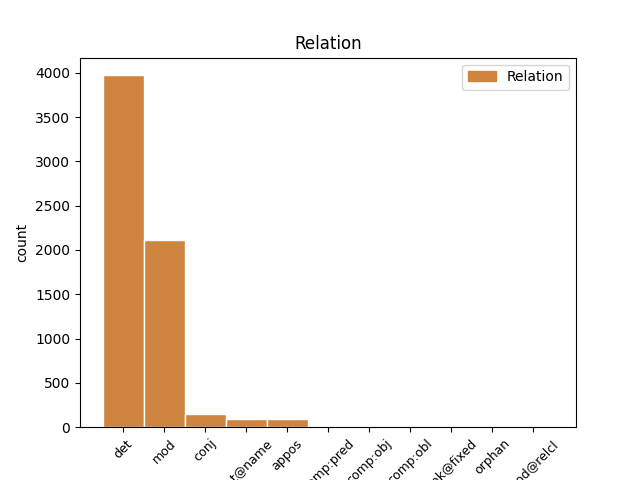
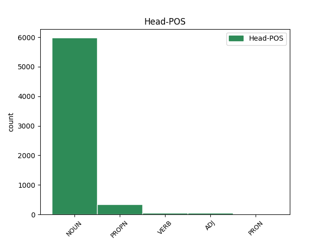
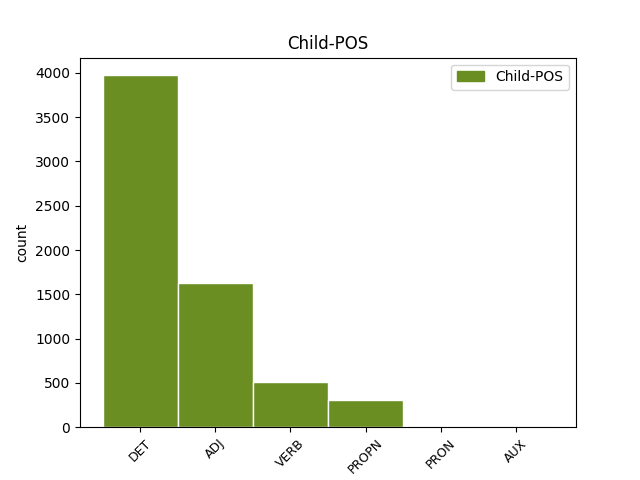

Distribution of features within this leaf



Agreement Rules sorted by frequency.
When the dependent token is None
1 - _ _ _ _ 0 _ _ _
2 Despuech _ _ _ _ 0 _ _ _
3 Jacques _ _ _ _ 0 _ _ _
4 , _ _ _ _ 0 _ _ _
5 Le le DET _ Definite=Def|Gender=Masc|Number=Sing|PronType=Art 6 det _ _
6 trafic trafic NOUN _ Gender=Masc|Number=Sing 0 _ _ _
7 de _ _ _ _ 0 _ _ _
8 les _ _ _ _ 0 _ _ _
9 piastres _ _ _ _ 0 _ _ _
10 , _ _ _ _ 0 _ _ _
11 Deux _ _ _ _ 0 _ _ _
12 rives _ _ _ _ 0 _ _ _
13 , _ _ _ _ 0 _ _ _
14 1953 _ _ _ _ 0 _ _ _
When the dependent token is None
1 Affaire affaire NOUN _ Gender=Fem|Number=Sing 0 _ _ _
2 politico-financière politico-financier ADJ _ Gender=Fem|Number=Sing 1 mod _ _
When the dependent token is None
1 Les _ _ _ _ 0 _ _ _
2 banquiers _ _ _ _ 0 _ _ _
3 n' _ _ _ _ 0 _ _ _
4 ont _ _ _ _ 0 _ _ _
5 jamais _ _ _ _ 0 _ _ _
6 été _ _ _ _ 0 _ _ _
7 arrêtés arrêter VERB _ Gender=Masc|Number=Plur|Tense=Past|VerbForm=Part|Voice=Pass 0 _ _ _
8 ni _ _ _ _ 0 _ _ _
9 jugés juger VERB _ Gender=Masc|Number=Plur|Tense=Past|VerbForm=Part 7 conj _ SpaceAfter=No
10 , _ _ _ _ 0 _ _ _
11 à _ _ _ _ 0 _ _ _
12 l' _ _ _ _ 0 _ _ _
13 exception _ _ _ _ 0 _ _ _
14 de _ _ _ _ 0 _ _ _
15 la _ _ _ _ 0 _ _ _
16 Chartered _ _ _ _ 0 _ _ _
17 Bank _ _ _ _ 0 _ _ _
18 qui _ _ _ _ 0 _ _ _
19 fut _ _ _ _ 0 _ _ _
20 inculpée _ _ _ _ 0 _ _ _
21 pour _ _ _ _ 0 _ _ _
22 des _ _ _ _ 0 _ _ _
23 pratiques _ _ _ _ 0 _ _ _
24 nettement _ _ _ _ 0 _ _ _
25 frauduleuses _ _ _ _ 0 _ _ _
26 . _ _ _ _ 0 _ _ _
When the dependent token is None
1 - _ _ _ _ 0 _ _ _
2 Paul Paul PROPN _ Gender=Masc|Number=Sing 0 _ _ _
3 Mus _ _ _ _ 0 _ _ _
4 , _ _ _ _ 0 _ _ _
5 Viêtnam _ _ _ _ 0 _ _ _
6 : _ _ _ _ 0 _ _ _
7 Sociologie _ _ _ _ 0 _ _ _
8 d' _ _ _ _ 0 _ _ _
9 une _ _ _ _ 0 _ _ _
10 guerre _ _ _ _ 0 _ _ _
11 , _ _ _ _ 0 _ _ _
12 Seuil _ _ _ _ 0 _ _ _
13 , _ _ _ _ 0 _ _ _
14 Paris Paris PROPN _ Gender=Masc|Number=Sing 2 mod _ SpaceAfter=No
15 , _ _ _ _ 0 _ _ _
16 1952 _ _ _ _ 0 _ _ _
17 . _ _ _ _ 0 _ _ _
When the dependent token is None
1 - _ _ _ _ 0 _ _ _
2 Bernard _ _ _ _ 0 _ _ _
3 Bonnet _ _ _ _ 0 _ _ _
4 préfet _ _ _ _ 0 _ _ _
5 de _ _ _ _ 0 _ _ _
6 l' _ _ _ _ 0 _ _ _
7 époque _ _ _ _ 0 _ _ _
8 : _ _ _ _ 0 _ _ _
9 trois _ _ _ _ 0 _ _ _
10 ans an NOUN _ Gender=Masc|Number=Plur 0 _ _ _
11 de _ _ _ _ 0 _ _ _
12 prison _ _ _ _ 0 _ _ _
13 , _ _ _ _ 0 _ _ _
14 dont _ _ _ _ 0 _ _ _
15 un un PRON _ Gender=Masc|Number=Sing 10 mod@relcl _ _
16 ferme _ _ _ _ 0 _ _ _
17 et _ _ _ _ 0 _ _ _
18 trois _ _ _ _ 0 _ _ _
19 ans _ _ _ _ 0 _ _ _
20 de _ _ _ _ 0 _ _ _
21 privation _ _ _ _ 0 _ _ _
22 de _ _ _ _ 0 _ _ _
23 ses _ _ _ _ 0 _ _ _
24 droits _ _ _ _ 0 _ _ _
25 civiques _ _ _ _ 0 _ _ _
26 et _ _ _ _ 0 _ _ _
27 civils _ _ _ _ 0 _ _ _
28 . _ _ _ _ 0 _ _ _
When the dependent token is None
1 Selon _ _ _ _ 0 _ _ _
2 moi _ _ _ _ 0 _ _ _
3 , _ _ _ _ 0 _ _ _
4 il _ _ _ _ 0 _ _ _
5 y _ _ _ _ 0 _ _ _
6 a _ _ _ _ 0 _ _ _
7 bien _ _ _ _ 0 _ _ _
8 cohérence _ _ _ _ 0 _ _ _
9 , _ _ _ _ 0 _ _ _
10 et _ _ _ _ 0 _ _ _
11 c' _ _ _ _ 0 _ _ _
12 est _ _ _ _ 0 _ _ _
13 pourquoi _ _ _ _ 0 _ _ _
14 j' _ _ _ _ 0 _ _ _
15 ai _ _ _ _ 0 _ _ _
16 décidé décider VERB _ Gender=Masc|Number=Sing|Tense=Past|VerbForm=Part 0 _ _ _
17 et _ _ _ _ 0 _ _ _
18 fait faire AUX _ Gender=Masc|Number=Sing|Tense=Past|VerbForm=Part 16 conj _ _
19 savoir _ _ _ _ 0 _ _ _
20 à _ _ _ _ 0 _ _ _
21 la _ _ _ _ 0 _ _ _
22 commission _ _ _ _ 0 _ _ _
23 que _ _ _ _ 0 _ _ _
24 je _ _ _ _ 0 _ _ _
25 ne _ _ _ _ 0 _ _ _
26 rejetais _ _ _ _ 0 _ _ _
27 pas _ _ _ _ 0 _ _ _
28 cet _ _ _ _ 0 _ _ _
29 exposé _ _ _ _ 0 _ _ _
30 de _ _ _ _ 0 _ _ _
31 les _ _ _ _ 0 _ _ _
32 motifs _ _ _ _ 0 _ _ _
33 . _ _ _ _ 0 _ _ _
Disagree Examples:
1 Une _ _ _ _ 0 _ _ _
2 seconde _ _ _ _ 0 _ _ _
3 opération _ _ _ _ 0 _ _ _
4 se _ _ _ _ 0 _ _ _
5 déroulait _ _ _ _ 0 _ _ _
6 en _ _ _ _ 0 _ _ _
7 parallèle _ _ _ _ 0 _ _ _
8 sur _ _ _ _ 0 _ _ _
9 le _ _ _ _ 0 _ _ _
10 territoire _ _ _ _ 0 _ _ _
11 de _ _ _ _ 0 _ _ _
12 la _ _ _ _ 0 _ _ _
13 commune _ _ _ _ 0 _ _ _
14 , _ _ _ _ 0 _ _ _
15 avec _ _ _ _ 0 _ _ _
16 un _ _ _ _ 0 _ _ _
17 groupe groupe NOUN _ Gender=Masc|Number=Sing 0 _ _ _
18 d' _ _ _ _ 0 _ _ _
19 une _ _ _ _ 0 _ _ _
20 dizaine _ _ _ _ 0 _ _ _
21 de _ _ _ _ 0 _ _ _
22 chevaliers _ _ _ _ 0 _ _ _
23 de _ _ _ _ 0 _ _ _
24 la _ _ _ _ 0 _ _ _
25 gaule _ _ _ _ 0 _ _ _
26 " _ _ _ _ 0 _ _ _
27 La _ _ _ _ 0 _ _ _
28 Barisienne Barisienne PROPN _ Gender=Fem|Number=Sing 17 mod _ SpaceAfter=No
29 " _ _ _ _ 0 _ _ _
30 , _ _ _ _ 0 _ _ _
31 des _ _ _ _ 0 _ _ _
32 pêcheurs _ _ _ _ 0 _ _ _
33 à _ _ _ _ 0 _ _ _
34 la _ _ _ _ 0 _ _ _
35 ligne _ _ _ _ 0 _ _ _
36 venus _ _ _ _ 0 _ _ _
37 nettoyer _ _ _ _ 0 _ _ _
38 les _ _ _ _ 0 _ _ _
39 rives _ _ _ _ 0 _ _ _
40 et _ _ _ _ 0 _ _ _
41 curer _ _ _ _ 0 _ _ _
42 le _ _ _ _ 0 _ _ _
43 petit _ _ _ _ 0 _ _ _
44 ruisseau _ _ _ _ 0 _ _ _
45 qui _ _ _ _ 0 _ _ _
46 serpente _ _ _ _ 0 _ _ _
47 sous _ _ _ _ 0 _ _ _
48 les _ _ _ _ 0 _ _ _
49 " _ _ _ _ 0 _ _ _
50 Sources _ _ _ _ 0 _ _ _
51 " _ _ _ _ 0 _ _ _
52 avant _ _ _ _ 0 _ _ _
53 de _ _ _ _ 0 _ _ _
54 se _ _ _ _ 0 _ _ _
55 jeter _ _ _ _ 0 _ _ _
56 dans _ _ _ _ 0 _ _ _
57 l' _ _ _ _ 0 _ _ _
58 Ornain _ _ _ _ 0 _ _ _
59 . _ _ _ _ 0 _ _ _
1 Les _ _ _ _ 0 _ _ _
2 élèves _ _ _ _ 0 _ _ _
3 de _ _ _ _ 0 _ _ _
4 la _ _ _ _ 0 _ _ _
5 classe _ _ _ _ 0 _ _ _
6 de _ _ _ _ 0 _ _ _
7 CE1 _ _ _ _ 0 _ _ _
8 de _ _ _ _ 0 _ _ _
9 l' _ _ _ _ 0 _ _ _
10 école école NOUN _ Gender=Fem|Number=Sing 0 _ _ _
11 Notre-Dame Notre-Dame PROPN _ Gender=Masc|Number=Sing 10 mod _ _
12 ont _ _ _ _ 0 _ _ _
13 pris _ _ _ _ 0 _ _ _
14 part _ _ _ _ 0 _ _ _
15 à _ _ _ _ 0 _ _ _
16 les _ _ _ _ 0 _ _ _
17 festivités _ _ _ _ 0 _ _ _
18 . _ _ _ _ 0 _ _ _
1 Ils _ _ _ _ 0 _ _ _
2 ont _ _ _ _ 0 _ _ _
3 été _ _ _ _ 0 _ _ _
4 reçus _ _ _ _ 0 _ _ _
5 à _ _ _ _ 0 _ _ _
6 la _ _ _ _ 0 _ _ _
7 boulangerie boulangerie NOUN _ Gender=Fem|Number=Sing 0 _ _ _
8 Leroy Leroy PROPN _ Gender=Masc|Number=Sing 7 mod _ _
9 pour _ _ _ _ 0 _ _ _
10 visiter _ _ _ _ 0 _ _ _
11 le _ _ _ _ 0 _ _ _
12 fournil _ _ _ _ 0 _ _ _
13 et _ _ _ _ 0 _ _ _
14 surtout _ _ _ _ 0 _ _ _
15 pétrir _ _ _ _ 0 _ _ _
16 la _ _ _ _ 0 _ _ _
17 pâte _ _ _ _ 0 _ _ _
18 afin _ _ _ _ 0 _ _ _
19 de _ _ _ _ 0 _ _ _
20 confectionner _ _ _ _ 0 _ _ _
21 de _ _ _ _ 0 _ _ _
22 délicieux _ _ _ _ 0 _ _ _
23 pains _ _ _ _ 0 _ _ _
24 à _ _ _ _ 0 _ _ _
25 le _ _ _ _ 0 _ _ _
26 chocolat _ _ _ _ 0 _ _ _
27 qu' _ _ _ _ 0 _ _ _
28 ils _ _ _ _ 0 _ _ _
29 ont _ _ _ _ 0 _ _ _
30 dégustés _ _ _ _ 0 _ _ _
31 à _ _ _ _ 0 _ _ _
32 l' _ _ _ _ 0 _ _ _
33 heure _ _ _ _ 0 _ _ _
34 de _ _ _ _ 0 _ _ _
35 le _ _ _ _ 0 _ _ _
36 goûter _ _ _ _ 0 _ _ _
37 avec _ _ _ _ 0 _ _ _
38 un _ _ _ _ 0 _ _ _
39 verre _ _ _ _ 0 _ _ _
40 de _ _ _ _ 0 _ _ _
41 jus _ _ _ _ 0 _ _ _
42 de _ _ _ _ 0 _ _ _
43 fruit _ _ _ _ 0 _ _ _
44 . _ _ _ _ 0 _ _ _
1 Bref _ _ _ _ 0 _ _ _
2 , _ _ _ _ 0 _ _ _
3 en _ _ _ _ 0 _ _ _
4 quittant _ _ _ _ 0 _ _ _
5 le _ _ _ _ 0 _ _ _
6 fournil _ _ _ _ 0 _ _ _
7 , _ _ _ _ 0 _ _ _
8 chacun _ _ _ _ 0 _ _ _
9 ne _ _ _ _ 0 _ _ _
10 rêvait _ _ _ _ 0 _ _ _
11 que _ _ _ _ 0 _ _ _
12 de _ _ _ _ 0 _ _ _
13 remettre _ _ _ _ 0 _ _ _
14 la _ _ _ _ 0 _ _ _
15 main _ _ _ _ 0 _ _ _
16 à _ _ _ _ 0 _ _ _
17 la _ _ _ _ 0 _ _ _
18 pâte _ _ _ _ 0 _ _ _
19 avec _ _ _ _ 0 _ _ _
20 Sylvie Sylvie PROPN _ Gender=Fem|Number=Sing 0 _ _ _
21 et _ _ _ _ 0 _ _ _
22 Daniel Daniel PROPN _ Gender=Masc|Number=Sing 20 conj _ SpaceAfter=No
23 . _ _ _ _ 0 _ _ _
1 Il _ _ _ _ 0 _ _ _
2 avait _ _ _ _ 0 _ _ _
3 épousé épouser VERB _ Gender=Masc|Number=Sing|Tense=Past|VerbForm=Part 0 _ _ _
4 Denise Denise PROPN _ Gender=Fem|Number=Sing 3 comp:obj _ _
5 Pierrejean _ _ _ _ 0 _ _ _
6 le _ _ _ _ 0 _ _ _
7 26 _ _ _ _ 0 _ _ _
8 octobre _ _ _ _ 0 _ _ _
9 1974 _ _ _ _ 0 _ _ _
10 et _ _ _ _ 0 _ _ _
11 de _ _ _ _ 0 _ _ _
12 leur _ _ _ _ 0 _ _ _
13 union _ _ _ _ 0 _ _ _
14 , _ _ _ _ 0 _ _ _
15 sont _ _ _ _ 0 _ _ _
16 nés _ _ _ _ 0 _ _ _
17 une _ _ _ _ 0 _ _ _
18 fille _ _ _ _ 0 _ _ _
19 et _ _ _ _ 0 _ _ _
20 deux _ _ _ _ 0 _ _ _
21 garçons _ _ _ _ 0 _ _ _
22 , _ _ _ _ 0 _ _ _
23 âgés _ _ _ _ 0 _ _ _
24 respectivement _ _ _ _ 0 _ _ _
25 de _ _ _ _ 0 _ _ _
26 24 _ _ _ _ 0 _ _ _
27 , _ _ _ _ 0 _ _ _
28 23 _ _ _ _ 0 _ _ _
29 et _ _ _ _ 0 _ _ _
30 14 _ _ _ _ 0 _ _ _
31 ans _ _ _ _ 0 _ _ _
32 . _ _ _ _ 0 _ _ _